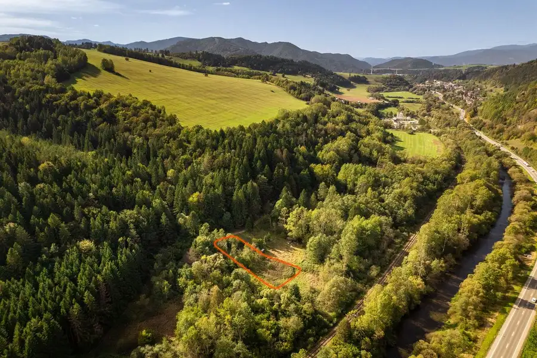
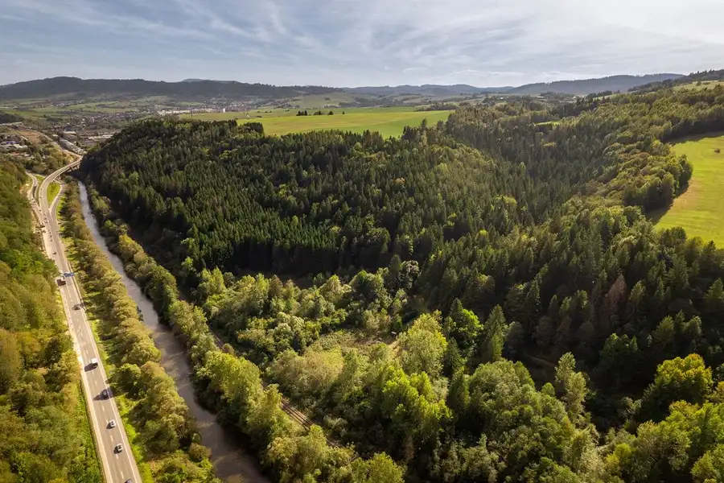
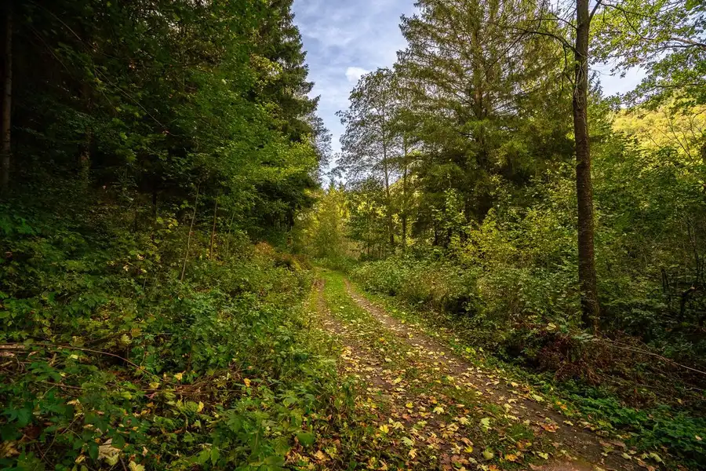
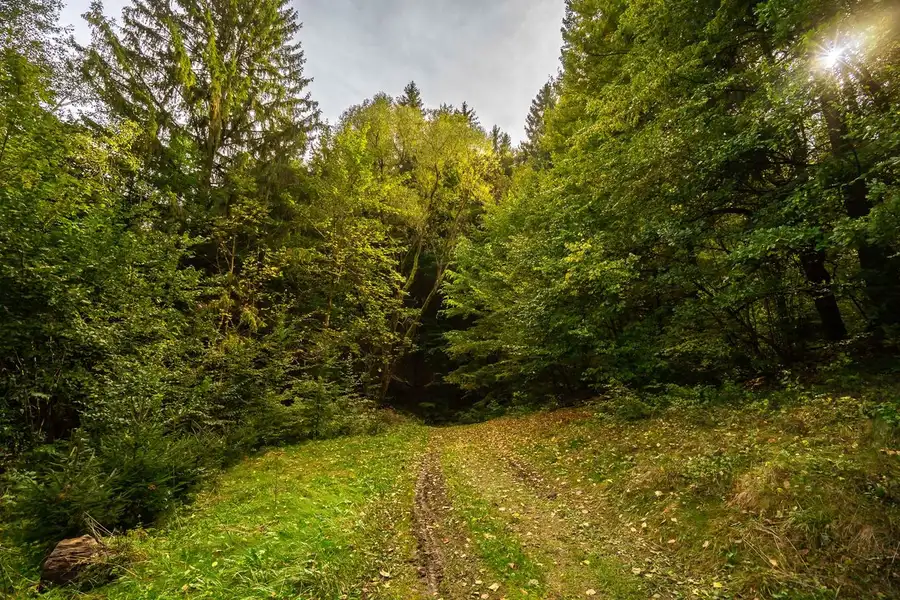
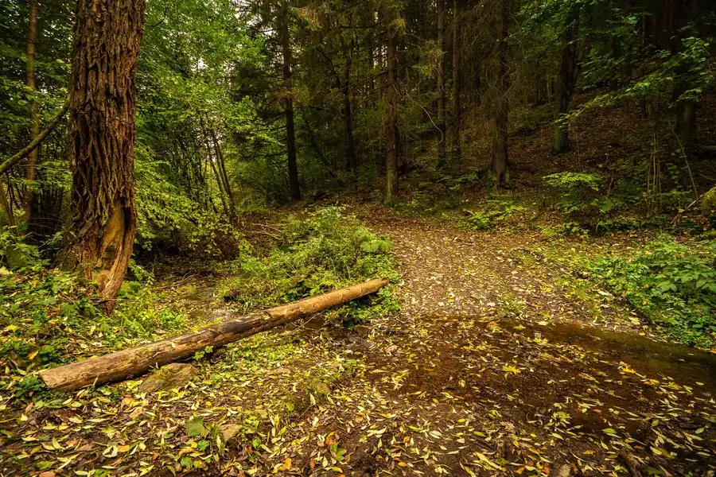
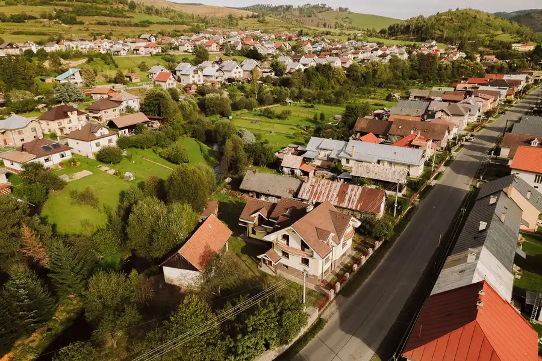
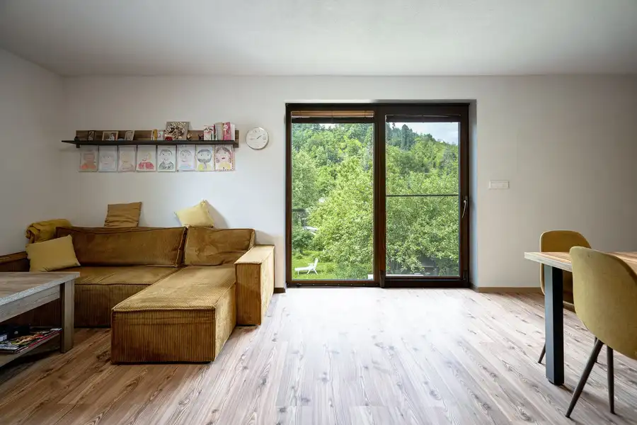
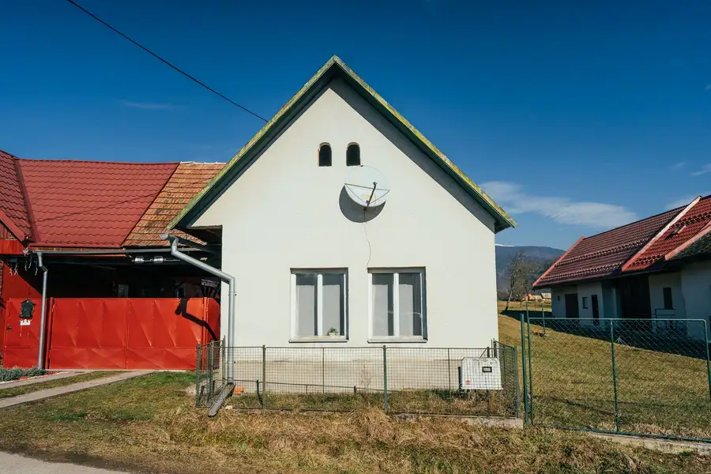

Jedinečný pozemok na samote pri lese - vhodný na stavbu chalupy blízko Brezna
Brezno





- Plocha1476 m²
O nehnuteľnosti
Ponúkame Vám na predaj tento výnimočný pozemok na kraji lesa, ktorý je ako stvorený pre chalupu na samote a rekreáciu celej rodiny. Nachádzate sa blízko mesta, no zároveň ste v prírode. Blízko pozemku preteká aj horský potôčik, ktorý dotvára príjemnú atmosféru. V dnešnej dobe sa tak jedná o zriedkavý pozemok vhodný pre milovníkov prírody a súkromia.Samotný pozemok je rovinatý a má lichobežníkový tvar s rozlohou 1.476 m2. Uvedený pozemok je podľa územno-plánovacej informácie mesta vhodný na výstavbu rodinných domov resp. individuálnu chalupnícku rekreáciu. Tiež tu máte veľmi dobré podmienky na cykloturistiku či turistiku a napríklad rovno z pozemku vidíte aj vyhliadkovú vežu Horné Lazy.Pre lepšiu predstavu o pozemku odporúčam pozrieť aj priložené video.Keďže však v okolí nie je dostupná elektrická sieť, tak by som odporúčal jeho využitie skôr na výstavbu rekreačnej nehnuteľnosti s elektrickou energiou riešenou pomocou fotovoltickej elektrárne s batériovým úložiskom a kúrením na tuhé palivo. Vodu možné riešiť vlastnou studňou a odpad žumpou. Prístup k pozemku je po spevnenej ceste. V prípade záujmu je možné pomôcť pri riešení projektovej dokumentácie pre nehnuteľnosť, či už na mieru alebo hotových projektov, ako aj výstavbu a zároveň tiež aj zabezpečiť vybavenie všetkých povolení až po získanie stavebného povolenia či kolaudáciu.Ak Vás ponuka zaujala, neváhajte ma kontaktovať na tel. 0948 390 660 alebo mail.: m.martin.medved@gmail.com
Parametre
- Druh
- Rekreačný pozemok
- Dátum zverejnenia
- 22. 10. 2025
- Elektrina
- Nedostupné
- Odpadové vody
- Nedostupné
- Plocha pozemku
- 1476 m²
- Plyn
- Nedostupné
- Pripravenosť k výstavbe
- Schválené v územnom pláne
- Terén pozemku
- Prevažne rovinatý
- Typ
- Predaj
- Voda
- Nedostupné
Kde to je


Mohlo by Vás zaujímať

DomNové 215 000 €Veľký rodinný dom vhodný aj ako rekreačná nehnuteľnosť Čierny Balog 343 m²
DomNové 325 000 €Moderné bývanie blízko centra v tichej a slepej ulici s dostatkom zelene Brezno 210 m²
Chalupa, rekreačný domčekNové 62 000 €Chalupa na predaj v obci Jasenie Jasenie 90 m²